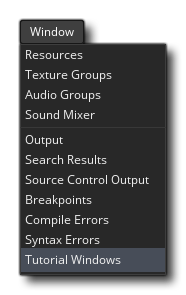

This tutorial will take you through the process of creating a small game using GameMaker Studio 2. The tutorial itself is rather large and covers everything from the GameMaker Studio 2 user interface to creating game graphics and then getting them moving, as well as player interaction within a game, and much, much more. So, to keep things simple we have split it into the following chapters:
Each chapter is also accompanied by a short video that takes you through each of the steps outlined in text, and you can close GameMaker Studio 2 at any time in the progress of this tutorial (saving your project) and when you next load the project you will be taken to the place where you left off. If you wish to play around with what you have learned so far, we recommend that you save the project in its current state - so that you can continue from the same point later - then save it again with a different name and edit the renamed project so as not to lose or change anything that is important to future chapters.
Note that the video overlay window can be closed and opened separately, so if you close it by mistake you can either click one of the links given at the start of each chapter (and listed below too), or you can go to the Window menu in the IDE and select Tutorial Windows. 
The videos that accompany each chapter can be found from the following links:
Note that you can access the chapter list from the Playlist icon in the top left-hand corner of the player and select the required video from there too.